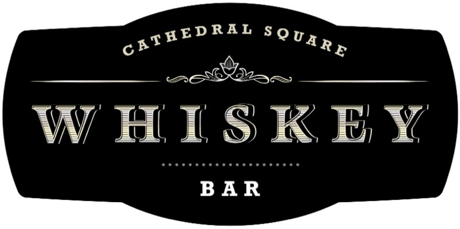
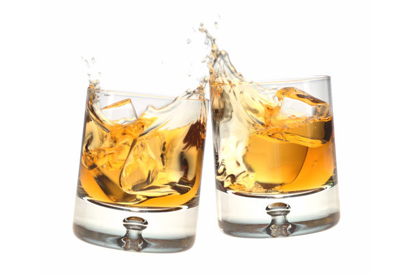

<!DOCTYPE html>
<html>
<head>
<meta charset="utf-8">
<title>Whiskey Tasting</title>
  <link rel="stylesheet" href="css/normalize.css">
  <link rel="stylesheet" href="css/style.css">
  <link rel="stylesheet" href="bootstrap/css/bootstrap-responsive.css">
  <link rel="stylesheet" href="bootstrap/css/bootstrap-responsive.min.css">
  <link rel="stylesheet" href="bootstrap/css/bootstrap.min.css">
  <link rel="stylesheet" href="bootstrap/css/bootstrap.css">
  <script src="/js/application.js"></script>
  <link href='http://fonts.googleapis.com/css?family=Frijole|Balthazar' rel='stylesheet' type='text/css'>

</head>

<body>
  <script type="text/x-handlebars" data-template-name="application">
    <div class='container'>
      <a href='#' class='navbar-brand'></a>
      <h2 id='welcome'>The 1st Annual Mascio Whiskey Tasting</h2>
      <br>
      <br>
      <br>
      <br>
    </div>

    <div class='navbar '>
      <div class="container">
          <ul class="nav nav-pills">
            <li><a href="#">Home</a></li>
            <li><a href="#/whiskeys">Whiskeys</a></li>
            <li><a href="#/rate">Rate</a></li>
          </ul>
      </div>
    </div>
    <hr/>


    <div class='container'>
      {{outlet}}
    </div>

    <footer class='container'>
      <hr/>
    </footer>
    <div class='container'>
      <div class="row">
        <div class="col-md-12">
            <div class='references'>
            <a href="http://emberjs.com/" class="btn"><i class="icon-user"></i>Ember.js</a>
            <a href="http://getbootstrap.com/" class="btn"><i class="icon-user"></i>Twitter Bootstrap</a>
            <a href="http://www.bulleit.com/" class="btn"><i class="icon-user"></i>Bulleit Whiskey</a>
            <a href="https://www.makersmark.com/" class="btn"><i class="icon-user"></i>Makers Mark</a>
            <a href="http://www.basilhaydens.com/" class="btn"><i class="icon-user"></i>Basil Haydens</a>
            <a href="https://www.blantonsbourbon.com/" class="btn"><i class="icon-user"></i>Blantons Bourbon</a>
            <a href="http://www.larcenybourbon.com/home/" class="btn"><i class="icon-user"></i>Larceny Bourbon</a>
            <a href="http://www.google.com/" class="btn"><i class="icon-user"></i>Google Images</a>
            <a href="http://www.askmen.com/fine_living/wine_dine_archive_250/276_set-up-your-own-whisky-tasting.html" class="btn"><i class="icon-user"></i>Ask Men</a>
            </div>
        </div>
      </div>
    </div>

  </script>

  <script type="text/x-handlebars" data-template-name="index">
    <div class="container">
      <div class="row">
        <div class="col-md-6">
             <h3 id='steps'>Welcome</h3>

                <p id='hello'>Welcome to the 1st ever Mascio Whiskey tasting. Tonight is sure to be full of laughs, love, whiskey and deep dish pizza!! We will have 5 whiskeys to sample tonight with the hightlight being Blantons. Take your time during the sampling and be sure to refer to the tasting steps. When you are done with each whiskey please fill out a review or rate the whiskey however you choose. <br><br>Tonight is not only a whiskey tasting but a celebration of Brooke and Scotts move from Chicago, IL. to Columbus, OH.
                </p>
                <div class='container'>
                 
                </div>
         </div>

         <div class="col-md-6">
             <h3 id='steps'>You cant just drink it!</h3>
                <h4 class="muted text-center">Steps for Tasting:</h4>
                  <ol id='tasting_steps'>
                    <li>Pour 1.5 ounces of whisky into each glass.</li><br>
                    <li>Hold the glass up to the light and observe the whisky’s clarity. According to the folks at Canadian Club, the whisky should “sparkle and be brilliant to the eye.” Also, murkiness is a sign of inferior craftsmanship.</li><br>
                    <li>Take a look at the whisky’s color, which can range from light (like apple juice) to deep amber. The reason for taking note of a whisky’s color is to help you determine the flavor intensity: Whiskys that are light in color are also lighter in flavor, while darker whiskys are more full-flavored. Also, whiskys that are aged longer are typically darker.</li><br>
                    <li>Before you nose a whisky, you’ll want to add a small amount of room-temperature spring water to the whisky. You don’t want to use cold water because it will depress the very aromas that you want to appreciate.</li><br>
                    <li>Just breathe it all in, look for aromas such as fruity, spicy, cinnamon, leather, dark chocolate. </li><br>
                    <li>When you do taste the whisky, look for flavors that you sensed when you nosed the glass. These flavors may include fruity, green apple, dark chocolate, pepper, etc. Remember that you can’t be wrong: everyone will taste something different since we all have different palates.</li><br>
                    <li>Rate the Whiskey.</li><br>
                    <li>Repeat the process with the next whisky you intend to taste, but make sure to cleanse your palate with an unsalted cracker before moving on.</li>
                  </ol>

         </div>
      </div>
    </div>
  </script>

  <script type="text/x-handlebars" data-template-name="rate">
    <h1> this is the rate section</h1>
  </script>

  <script type='text/x-handlebars' data-template-name='whiskey'>
  <div class="container">

      <h1 class="muted text-center">{{title}}</h1>
        <ul class="list-unstyled col-md-12">
            <li class='row'>
            <br>
            <br>
              
                <div class='col-md-8'>
                  <p class='product-description'>{{description}}</p>
                  <h5>{{proof}}</h5>
                  <h5>Price:  {{price}}</h5>
                  <h5>Mascio Party Rating:  {{rating}}</h5>
                  <h5>Served With:  {{food}}</h5>
                  
                </div>
            </li>
        </ul>
    </div>
  </script>

  <script type="text/x-handlebars" data-template-name="whiskeys">
    <div class="container">

      <h1 class="muted text-center">Whiskeys</h1>
        <ul class="list-unstyled col-md-8">
          {{#each}}
            <li class='row'>
            <br>
            <br>
              
                <div class='col-md-8'>
                  <h1>{{title}}</h1>
                  <p class='product-description'>{{description}}</p>
                  <h5>{{proof}}</h5>
                  <h5>Price:  {{price}}</h5>
                  <p>{{#link-to 'whiskey' this class='btn btn-warning' tagName='button'}}Taste{{/link-to}}</p>
                </div>
            </li>
          {{/each}}
        </ul>
    </div>
  </script>


  <script src="js/libs/jquery-1.10.2.js"></script>
  <script src="js/libs/handlebars-1.1.2.js"></script>
  <script src="js/libs/ember-1.3.1.js"></script>
  <script src="js/libs/ember_data.js"></script>
  <script src="http://builds.emberjs.com/canary/ember-data.js"></script>
  <script src="js/app.js"></script>

  <!-- to activate the test runner, add the "?test" query string parameter -->
  <script src="tests/runner.js"></script>
  <script src="bootstrap/js/libs/bootstrap.js"></script>
  <script src="bootstrap/js/libs/bootstrap.min.js"></script>
</body>
</html>
